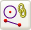

 直线和圆弧是特殊的下拉菜单和工具条，用于通过预定义的约束组合来快速创建关联或非关联的直线和曲线。您不必打开对话框或者操作任何图标选项控件。
使用 MB1 创建直线或圆弧。
使用 MB2 取消创建直线和圆弧。
捕捉点规则适用于多数直线和圆弧创建选项。
当满足所有约束条件后，将自动创建直线和圆弧。
没有使用平面约束。
如果您使用关联选项：
相对绝对坐标系存储所有点约束
当您编辑用“直线和圆弧”菜单创建的关联直线和圆弧时，将打开“关联直线”和“关联圆弧/圆”对话框。
|
注释 |
如果关联的直线或圆弧是在制图环境中创建的，则无法编辑它们。 |
位于何处？
插入→曲线→直线和圆弧
直线和圆弧工具条